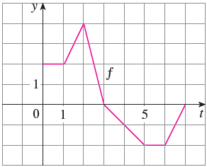

Skip to main content ☰ Contents You! < Prev ^ Up Next > \( \newcommand{\ds}{\displaystyle}
\newcommand{\lrpar}[1]{\left(#1\right)}
\newcommand{\lrbrace}[1]{\left\lbrace #1 \right\rbrace}
\newcommand{\inv}[1]{#1^{-1}}
\newcommand{\R}{\mathbb{R}}
\newcommand{\Z}{\mathbb{Z}}
\newcommand{\dc}{^\circ}
\newcommand{\lt}{<}
\newcommand{\gt}{>}
\newcommand{\amp}{&}
\definecolor{fillinmathshade}{gray}{0.9}
\newcommand{\fillinmath}[1]{\mathchoice{\colorbox{fillinmathshade}{$\displaystyle \phantom{\,#1\,}$}}{\colorbox{fillinmathshade}{$\textstyle \phantom{\,#1\,}$}}{\colorbox{fillinmathshade}{$\scriptstyle \phantom{\,#1\,}$}}{\colorbox{fillinmathshade}{$\scriptscriptstyle\phantom{\,#1\,}$}}}
\)
Section 4.3 The Fundamental Theorem of Calculus
Objectives
Evaluate and determine basic characteristics of accumulation functions
State the Fundamental Theorem of Calculus (Part 1) and use it to compute derivatives of accumulation functions
State the Fundamental Theorem of Calculus (Part 2) and use it to compute definite integrals of functions with known antiderivatives (possibly with algebraic/trigonometric manipulation)
Explain the relationship between integration and differentiation as processes
Subsection 4.3.1 Before Class
https://mymedia.ou.edu/media/4.3-1/1_9m7tun82Figure 41. Pre-Class Video 1
Subsubsection 4.3.1.1 The First Fundamental Theorem
Example 4.3.1 .
The function \(f\) is given in the graph below. Define the function \(g(x) = \ds \int_0^x f(t)\, dt\text{.}\) Find \(g(0),g(1),g(2)\text{,}\) and \(g(3)\text{.}\) Then, sketch a rough graph of \(g\) on the interval \([0,3]\text{.}\)
Solution .
\begin{align*}
g(0) \amp = 0 \\
g(1) \amp = 1 \\
g(2) \amp = 3\\
g(3) \amp = 3
\end{align*}
Answers for the sketch will vary
Theorem 4.3.2 . The Fundamental Theorem of Calculus, Part 1 (FTC1).
If \(f\) is continuous on \([a,b]\text{,}\) then the function \(g\) defined by \(g(x) = \ds \int_a^x f(t)\, dt\text{,}\) for \(a\leq x\leq b\) is continuous on \([a,b]\text{,}\) differentiable on \((a,b)\text{,}\) and \(g'(x) = f(x)\text{.}\) Using Leibniz notation, we have \(\ds \dfrac{d}{dx}\left[\int_a^x f(t)\, dt\right] = f(x)\)
Example 4.3.3 .
Find the derivative of the function \(g(x) = \ds \int_0^x \sqrt{1-t^2}\, dt\)
Example 4.3.4 .
Find \(\ds \dfrac{d}{dx} \int_1^{x^2} \csc t\, dt\)
Example 4.3.5 .
Find \(F'(x)\text{,}\) if \(F(x) = \ds \int_x^0 \sqrt{1+\sec y}\, dy\)
Subsection 4.3.2 Pre-Class Activities
Example 4.3.6 .
Let \(g(x) = \ds \int_0^x f(t)\, dt\text{,}\) where \(f\) is the function in the graph below. 
Evaluate \(g(0),g(1),g(2),g(3)\text{,}\) and \(g(6)\)
Where is \(g\) increasing?
Where does \(g\) have a local max?
Sketch a rough graph of \(g\text{?}\)
Solution .
\(g(0) = 0\text{,}\) \(g(1) = 2\text{,}\) \(g(2) = 3\text{,}\) \(g(3) = 5\text{,}\) \(g(6) = 1\)
\(\displaystyle (0,3)\)
\(\displaystyle t=3\)
Answers vary.
Example 4.3.7 .
Find the derivative of the following functions:
\(\displaystyle g(x) = \ds \int_2^x \sqrt{k+k^3}\, dk\)
\(\displaystyle r(y) = \ds \int_y^2 t^3\cos t\, dt\)
\(\displaystyle f(x) = \ds \int_0^{x^4} \tan^2t\, dt\)
Solution .
\(\displaystyle g'(x) = \sqrt{x+x^3}\)
\(\displaystyle r'(y) = -y^3\cos y\)
\(\displaystyle f'(x) = 4x^3\tan^2(x^4)\)
Example 4.3.8 .
If \(f(x) = \ds \int_0^x (1-t^2)\cos^2t\, dt\text{,}\) on what interval is \(f\) increasing?
Subsection 4.3.3 In Class
Subsubsection 4.3.3.1 The Second Fundamental Theorem
Theorem 4.3.9 . The Fundamental Theorem of Calculus, Part 2 (FTC2).
If \(f\) is continuous on \([a,b]\text{,}\) then \(\ds \int_a^b f(x)\, dx = F(b)-F(a)\text{,}\) where \(F\) is any antiderivative of \(f\text{.}\)
Example 4.3.10 .
Evaluate \(\ds \int_{-2}^1 x^3\,dx\)
Solution . \(\ds \int_{-2}^1 x^3\,dx = -\dfrac{15}{4}\)
Example 4.3.11 .
Find the area under the curve \(y = x^2\) from 0 to 1.
Solution . \(\ds \int_0^1 x^2\, dx = \dfrac{1}{3}\)
Example 4.3.12 .
Find the area under the curve \(y = \sin x\text{,}\) from \(0\) to \(\dfrac{3\pi}{2}\)
Solution . \(\ds \int_0^{3\pi/2} \sin x\, dx = 1\)
Example 4.3.13 .
Is the statement \(\ds \int_{-1}^1 \dfrac{1}{x^3}\, dx = 0\) correct? Why or why not?
Solution . No- \(\dfrac{1}{x^3}\) is not continuous at \(x=0\text{,}\) so we can't use FTC 2.
Example 4.3.14 .
Find the derivative of \(g(r) = \ds \int_5^r (t-t^2)^8\,dt\)
Example 4.3.15 .
Find the derivative of \(R(y) = \ds \int_{y}^4 t^5\sec t\, dt\)
Example 4.3.16 .
Find the derivative of \(y = \ds\int_0^{4x^3} \tan^2\theta\, d\theta\)
Solution . \(\dfrac{dy}{dx} = 12x^2\tan^2(4x^3)\)
Example 4.3.17 .
Calculate the integral \(\ds \int_1^3 (x^2+2x-4)\, dx\)
Solution . \(\ds \int_1^3 (x^2+2x-4)\, dx= \dfrac{74}{3}\)
Example 4.3.18 .
Calculate the integral \(\ds \int_0^2 \lrpar{\dfrac{4}{5}t^3-\dfrac{3}{4}t^2+\dfrac{2}{5}t}\,dt\)
Solution . \(\ds \int_0^2 \lrpar{\dfrac{4}{5}t^3-\dfrac{3}{4}t^2+\dfrac{2}{5}t}\,dt= 2\)
Example 4.3.19 .
Calculate the integral \(\ds \int_1^9 \sqrt{x}\,dx\)
Solution . \(\ds \int_1^9 \sqrt{x}\,dx = \dfrac{52}{3}\)
Example 4.3.20 .
Calculate the integral \(\ds \int_1^4 \dfrac{2+x^2}{\sqrt{x}}\,dx\)
Solution . \(\ds \int_1^4 \dfrac{2+x^2}{\sqrt{x}}\,dx = \dfrac{82}{5}\)
Example 4.3.21 .
Calculate the integral \(\ds \int_{\pi/6}^{\pi/2}\csc t\cot t\, dt\)
Solution . \(\ds \int_{\pi/6}^{\pi/2}\csc t\cot t\, dt = 1\)
Example 4.3.22 .
Calculate the integral \(\ds \int_{-1}^2 (3u-2)(u+1)\, du\)
Solution . \(\ds \int_{-1}^2 (3u-2)(u+1)\, du = \dfrac{9}{2}\)
Example 4.3.23 .
Calculate the integral \(\ds \int_{\pi/4}^{\pi/3} \csc^2\theta\, d\theta\)
Solution . \(\ds \int_{\pi/4}^{\pi/3} \csc^2\theta\, d\theta = 1-\dfrac{1}{\sqrt{3}}\)
Example 4.3.24 .
Calculate the integral \(\ds \int_1^{18} \sqrt{\dfrac{2}{z}}\, dz\)
Solution . \(\ds \int_1^{18} \sqrt{\dfrac{2}{z}}\, dz = 12-2\sqrt{2}\)
Example 4.3.25 .
Evaluate the integral \(\ds \int_1^2 \dfrac{v^5+3v^6}{v^4}\, dv\)
Solution . \(\ds \int_1^2 \dfrac{v^5+3v^6}{v^4}\, dv = \dfrac{17}{2}\)
Example 4.3.26 .
Evaluate the integral \(\ds\int_0^\pi f(x)\, dx\text{,}\) where
\begin{equation*}
f(x) = \begin{cases}\sin x \amp \text{if }0\leq x \lt \pi/2 \\ \cos x \amp \text{if }\pi/2\leq x\leq \pi \end{cases}
\end{equation*}
Example 4.3.27 .
Evaluate the limit \(\ds \lim_{n\to \infty} \sum_{i=1}^n \lrpar{\dfrac{i^4}{n^5} + \dfrac{i}{n^2}}\text{.}\) Hint : Consider it as a Riemann sum on \([0,1]\text{.}\)
Solution . \(\ds \lim_{n\to \infty} \sum_{i=1}^n \lrpar{\dfrac{i^4}{n^5} + \dfrac{i}{n^2}} = \int_0^1 x^3 + x\, dx = \dfrac{7}{10}\)
Example 4.3.28 .
If \(f(1) = 12\text{,}\) \(f'\) is continuous, and \(\ds \int_1^4 f'(x)\, dx = 17\text{,}\) what is the value of \(f(4)\text{?}\)
Subsection 4.3.4 After Class Activities
Example 4.3.29 .
Compute \(\ds \int_0^1 (1+r)^3\, dr\)
Solution . \(\ds \int_0^1 (1+r)^3\, dr = \dfrac{7}{4}\)
Example 4.3.30 .
Find the area under the curve \(f(x) = \dfrac{x^4 + 1}{x^2}\) between 1 and 2.
Solution . \(\ds \int_1^2 f(x)\, dx = \dfrac{17}{6}\)
Example 4.3.31 .
Evaluate \(\ds \int_{-1}^1 x^{2022}\, dx\)
Solution . \(\ds \int_{-1}^1 x^{2022}\, dx = \dfrac{2}{2023}\)
Example 4.3.32 .
What does it mean for differentiation and integration to be inverse processes?
Solution . Differentiation and integration undo each other; you take a deriative to undo an integral, and you take an integral to undo a derivative.